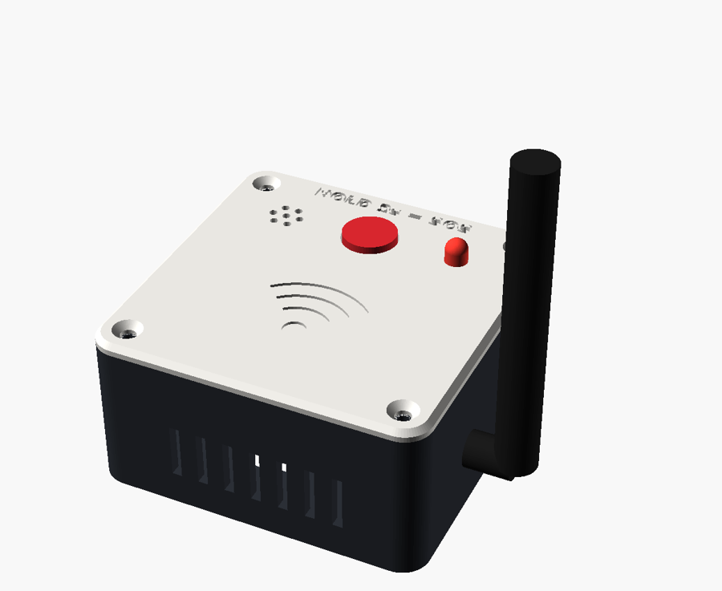
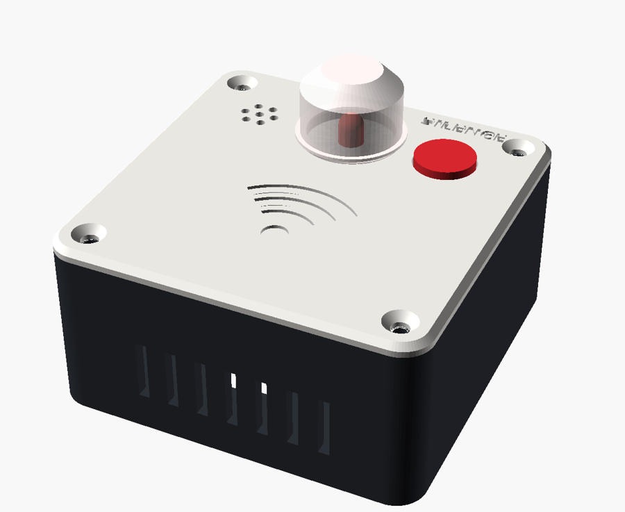

Phase 8 adds a caregiver alert station, a hold-to-SOS button on the RX node, and printable boxes for both. A fall still sends a LINE card. Now the caregiver also hears it in the house.


| Device | When | Press | Result |
|---|---|---|---|
| RX node | Idle | Hold 2 s | SOS to Pi and stations |
| Idle | Short | Status chirp (1 = Wi-Fi OK) | |
| Ringing | Any | Silences this node at once; no SOS | |
| Alert station | Ringing | Any | Silences this station |
| Idle | Hold 2 s | Self-test beep | |
| Idle | Short | Status chirp |
bars drawn to scale · 1.6 s shown
220 Ω gives the LED about 6 mA. For a louder buzzer in a noisy hall, drive it from 5 V through an S8050 transistor with a 1 kΩ base resistor.
72.8 × 72.8 × 35.8
mm, same for both devices, so one stand and one screw set fit both
PLA or PETG · 0.2 mm layers · 3 walls · 20 % infill · no supports · fits a 220 mm bed
Table (rubber feet) · wall (2 keyholes, 32 mm apart) · 20° desk stand · tape
No brand name on any part: the lid only carries a Wi-Fi mark and the button label. Turn the boxes around in the 3D viewer.
SOS copies count once, SOS never blocks a fall alert, both message formats parse.
The real sketches run on a PC with simulated buttons, buzzer, time and Wi-Fi.
Closed and manifold, no supports, and no parts collide when assembled.